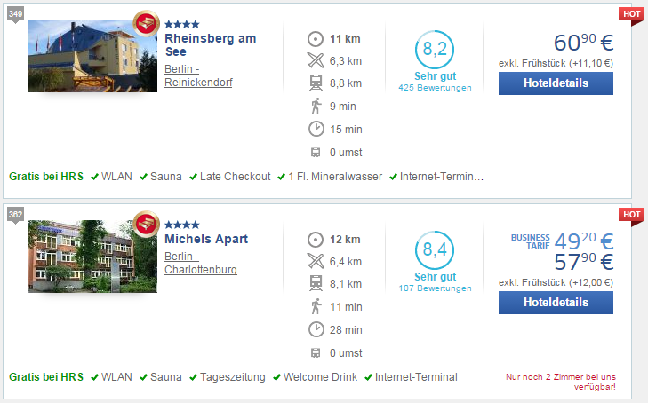

HotelRoute
HotelRoute is a Google Chrome extension which helps you to find hotels with the best public transport connection to your destination.
It helps you to save time, save money, reduce travel stress and get better hotel quality.
Status
HotelRoute was developed by Thomas Tursics and Alexey Valikov as the DB Hackathon 3 project and should be considered a prototype or a proof-of-concept implementation.
What it does
HotelRoute extends hotel search results of hrs.de and adds information on public transport connection between the found hotels and the travel destination.

HotelRoute adds the following information:
- - walking time to the next public transport stop
-
 - duration of the trip with public transport to your destination (in minutes)
- duration of the trip with public transport to your destination (in minutes) -
 - how many times do you have to change during the trip
- how many times do you have to change during the trip
How it helps
When you search for hotels on portals like hrs.de, hotel.com or booking.com, search results typically contain distance to your destination in kilometers or miles.
If you prefer using public transport, distance in kilometers does not help you that much. Depending on the location of your hotel and your travel destination, 10 kilometers may take you 10 minutes or over an hour. This may be a direct connection or you may need to change transport means a couple of times.
All of this makes a great difference in terms of time and stress, and ultimately has great influence on yoru travel experience.
HotelRoute checks each of the found hotels for the quality of the public transport connection to you travel destination and displays this information directly in the search results.
This helps you to:
- save time by travelling less,
- save money by avoiding expensive central hotels,
- get better hotel quality (more hotel stars) for the price in offside, but still well connected hotels.
How to use it
- Download and install the Google Chrome extension from Releases
- Go to hrs.de and search for hotels for a travel destination in Germany:

- See the connection information in results:
 - Choose the hotel which suits you best
Disclaimer
The accuracy of the provided information is not guaranteed. We overtake nor responsibility for the correctness of results.
Limitations
- HotelRoute uses bahn.de to find the shortest trip between each of the hotels and your travel destination.
This means HotelRoute mostly works only for German destinations. - HotelRoute uses "unofficial" APIs for bahn.de, accesses and modifies hrs.de pages directly.
This means HotelRoute may cease working or break any moment of time without notice. - HotelRoute is primarily a prototype with the goal to demostrate integration of bahn.de with external applications.
HotelRoute may be discontinued or shut down any moment of time. - In some cases the location of the hotel can't be be unambiguously determined based on its address.
This means that results may be inaccurate. - HotelRoute searches for the shortest trip between the address of the hotel and your travel destination at ca. 09:00 of the first or the second day of the stay (the latter in case current time is already later than 09:00 of the first day of the stay).
In certain cases (public holidays etc.) these results may be not representative.
Privacy
- HotelRoute accesses travel destination, arrival and departure dates and the results of your search.
- This information is transmitted to the api.hotelsearch.org and indirectly to bahn.de. It is neither stored nor transmitted to any other parties.
- Currently we use the
HTTPprotocol to transfer data. This means that third parties potentially have access to the information indicated above.